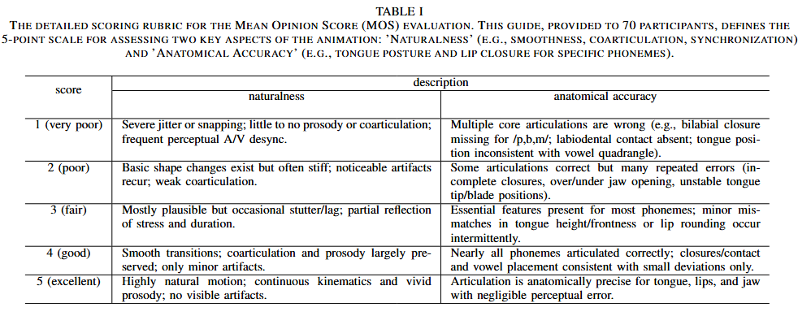

Contact us : threedthreem@gmail.com
This paper addresses the challenge of accurately modeling 3D oral movements, essential for speech-driven applications in speech therapy, language education, and animation. Existing methods for lip-reading and facial animation struggle to generalize across diverse speakers, limiting precision in capturing complex oral dynamics. Our main contribution is the first publicly available dataset mapping phonemes to 3D model parameters for the tongue, lips, and jaw, enabling anatomically accurate simulations of speech. We also propose a novel approach integrating audio feature extraction with speaker-specific adaptability, using bilinear interpolation to capture traits like intonation and accent. Evaluations, including Mean Opinion Score (MOS), show a 19.44% improvement in MOS over existing models across accents and sentences. Preference tests further reveal a 14.7% increase in realism and a 68.7% higher overall preference, underscoring our method's applicability to therapeutic and educational contexts. These findings advance speech-driven 3D modeling, offering a foundation for enhanced visualization of oral structures in diverse applications.
All the results were generated by our model and rendered using Blender.
Access all results here: Google Drive Link .
'AA': open central unrounded vowel, open back unrounded vowel, open back rounded vowel
Front View
Side View
'F': voiceless labiodental fricative
Front View
Side View
Trim excess clay from around lip of mold and set aside while assembling lid.
Front View
Side View
Young children should avoid exposure to contagious diseases.
Front View
Side View
I'm on my way to the meeting.
Front View
Side View
That is exactly what happened.
Front View
Side View
Southern
She had your dark suit in greasy wash water all year.
New York City
She had your dark suit in greasy wash water all year.
Western
She had your dark suit in greasy wash water all year.
우리나라 가을은 참으로 아름답다.
Uri nara gaeureun chameuro areumdapda
The expert scoring rubric is shown below.
